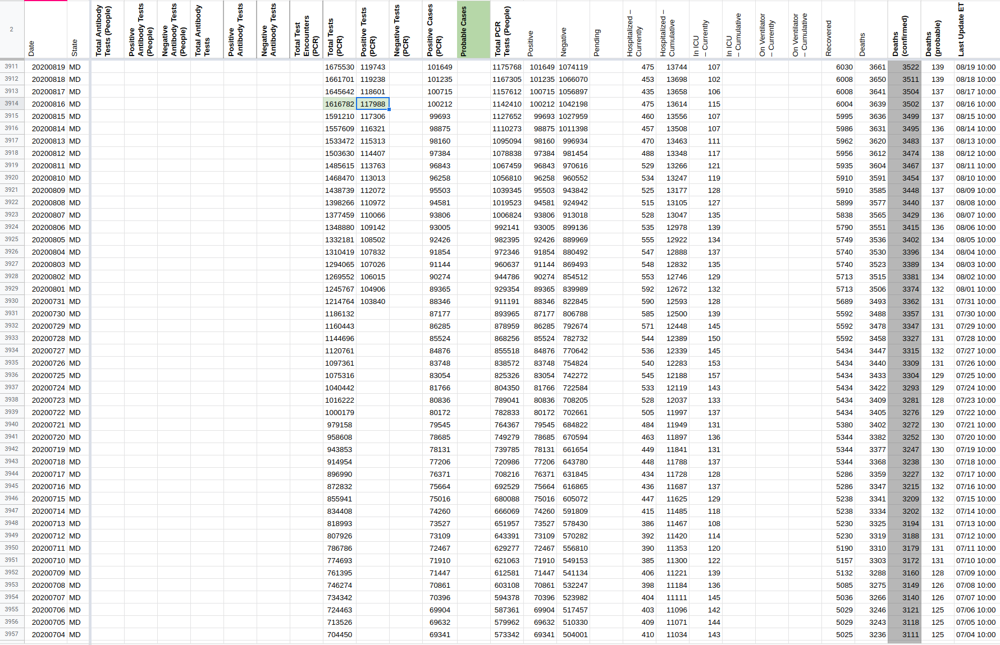
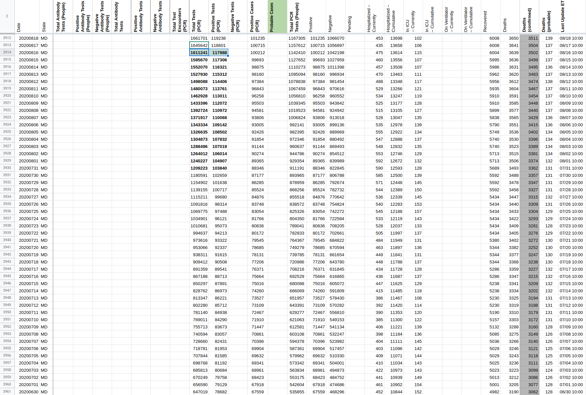

[MD] Backfill data for Positive Tests (PCR)
Issue number 711
amandafrench opened this issue on July 31, 2020 at 9:30 am
Target Date: Overview: Currently we do not report positiveTestsViral for Maryland. MD publishes this data at https://coronavirus.maryland.gov/datasets/mdcovid19-testingvolume/data?orderBy=date&orderByAsc=false in a downloadable spreadsheet and in its API. I have entered a new value (July 31, 2020) for this data as of July 29, 2020 an guidance to checkers on updating it subsequently, but we need to backfill the time series. Contribution to milestone: Not related to current milestone but is related to “People vs. Tests” breakout Other benefits: new data Potential challenges: Backfilling Editorial: Public note about new positiveTestsViral data available for MD
Comments
We backfilled Total-PCR-tests and Positive-PCR-tests from MD’s “Testing Volume” ArcGIS dataset, as it was captured on Aug-16th. The backfill included only Aug-16th and earlier dates, going all the way back to March-24
post_update[DataStore]Coronavirus numbers by state - [Raw]StatesDaily.csv.txt pre_update_[DataStore]Coronavirus numbers by state - [Raw]StatesDaily.csv.txt  
This issue has been automatically marked as stale because it has not had recent activity. It will be closed if no further activity occurs. Thank you for your contributions!